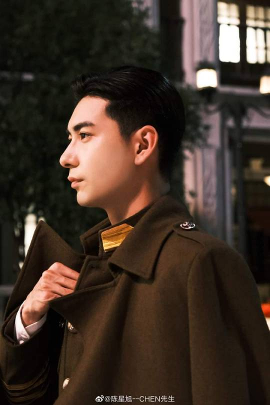

Chen Xing Xu es un actor chino que nació el 31 de marzo de 1996 en Shenyang, provincia de Liaoning, China. Comenzó a actuar cuando tenía solo cuatro años, apareciendo en su primera serie dramática, "The Passion Burning Years", en 2000. Se graduó de la Academia Central de Drama en 2018, y en 2019 protagonizó el drama "Goodbye My Princess", siguiendo con un papel protagonista en la película "The Enchanting Phantom" en 2020.

Goodbye my Princess tambien protagoniso obteniendo 9,2 de puntuacion!
Fuente: Viki.com
Personajes Fall in Love 2021
Sinopsis
Para Mu Wan Qing (Zhang Jing Yi), 1926 siempre será recordado como el año que cambió su vida para siempre. Tras la muerte de su madre, Wang Qing supo que había llegado el momento de regresar a China. Llevando las cenizas de su madre a casa para enterrarlas, Wan Qing regresó a su tierra natal, sin saber lo que le esperaba al llegar.
Al crecer sin padre, Wan Qing regresó a China decidida a reencontrarse con el hombre que apenas recordaba, con la esperanza de que, al hacerlo, podría descubrir la verdadera razón por la que sus padres se separaron hace tantos años. Pero aún más apremiante que el misterio que rodeaba la separación de sus padres era la historia no contada de cómo los hermanos que nunca conoció realmente perdieron la vida. A medida que Wan Qing comienza a descubrir los secretos del pasado, se encuentra con que su camino se cruza a menudo con los de Tan Xuan Lin (Chen Xing Xu) y Xu Guang Yao (Lin Yan Jun). Uno de ellos, recién nombrado líder de las tropas insurgentes, y el otro, hijo de un poderoso comandante militar, se encuentran en bandos opuestos de los disturbios en Shanghái, pero cada uno de ellos se encariña con Wan Qing y acepta utilizar su poder e influencia para ayudarla en su búsqueda. A medida que lo hacen, los tres comienzan a desarrollar una amistad fuerte y duradera; una amistad que pronto se pone a prueba.
Al profundizar en el pasado, los tres amigos pronto descubren que la historia de la familia de Wan Qing es mucho más complicada de lo que podrían haber imaginado. Trabajando para desentrañar los misterios del pasado, Wan Qing descubre que su corazón la lleva por un camino inesperado. ¿Le traerá su viaje las respuestas que busca o descubrirá que lo que más ha buscado ha estado a su lado todo el tiempo?
Una historia de familia, amistad y lealtad, "Enamórate" es un drama romántico histórico de 2021 dirigido por Lin Jian Long y Chen Guo Hua.